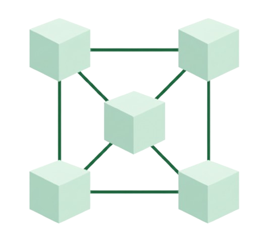

Blockchain
Blockchain (o cadena de bloques) es una tecnología de registro distribuido e inmutable que permite almacenar y verificar transacciones de forma segura, transparente y sin necesidad de un intermediario central. En lugar de depender de una única autoridad (como un banco o una empresa), los datos se registran en una red de muchas computadoras (nodos) que trabajan de forma conjunta para validar y asegurar la información.
Puntos clave
- Es una base de datos descentralizada compartida entre múltiples usuarios.
- La información se organiza en bloques enlazados criptográficamente.
- Los datos registrados son inmutables y no pueden modificarse.
- Cada participante posee una copia del registro, aumentando la fiabilidad.
- Funciona sin intermediarios centrales.
- Ofrece alta seguridad gracias al uso de criptografía.
Enlaces Relevantes
